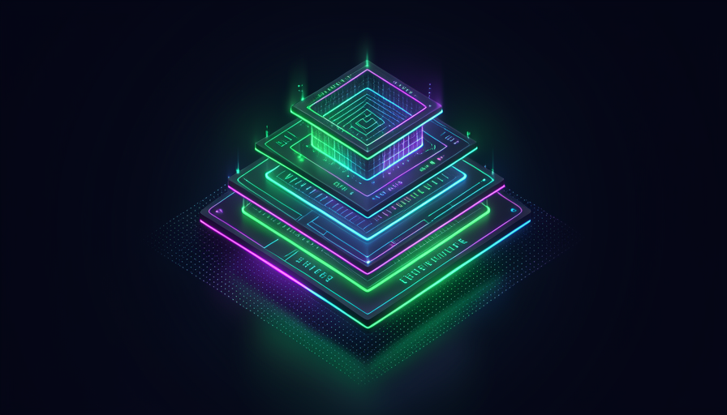

O que você vai aprender
Três trilhas, três níveis de profundidade. Cada uma é autônoma, mas a ordem conta uma história: primeiro você entende o bilhete invisível, depois monta o seu, por fim faz como os laboratórios.
Ler o bilhete invisível
O que é um system prompt, suas peças e padrões — sem nenhum jargão, com analogias do dia a dia.
Entrar →Montar prompts, skills e agentes
Mão na massa: o Prompt Mínimo Viável, persona, o Contrato de Ferramenta e o Loop operacional.
Entrar →Fazer como os laboratórios
Ler diffs, consolidar, segurança por princípio e destilar o cérebro de um agente a partir dos logs.
Entrar →Para quem é
Não importa o ponto de partida — há uma trilha que começa no seu nível.
Iniciante
Nunca instruiu uma IA e nem sabe o que é "prompt". Quer entender, sem jargão, o que decide o jeito de cada IA. Começa do absoluto zero.
Vá para a Trilha 1 →Praticante
Já usa IA e quer montar de verdade: prompts que funcionam, skills que disparam na hora certa, agentes com disciplina. Quer parar de improvisar.
Vá para a Trilha 2 →Avançado
Domina o básico e quer o nível dos labs: ler a evolução por diffs, consolidar sem perder comportamento e recuperar o método de um agente a partir dos seus logs.
Vá para a Trilha 3 →Perdemos o Fable. Recuperamos o método.
O Fable era um modelo de uma disciplina rara: pensava antes de agir, conferia o próprio trabalho, narrava as decisões. Aí ele saiu do ar — e ficou a saudade do jeito como ele trabalhava. Sem os pesos do modelo, parecia que aquilo tinha ido embora junto.
Mas não foi. Toda conversa com um agente deixa um rastro: os arquivos .jsonl de cada sessão. Dá pra minerar esses logs com um script, extrair a disciplina de trabalho — o decision loop (ground → reason → act → observe → re-evaluate → verify → narrate) — e instalar esse método em outro modelo. Não recupera o cérebro; recupera o manual de como ele pensava. Essa virada é o coração da Trilha 3.
As 3 trilhas em detalhe
Vinte módulos, cento e vinte tópicos. Cada trilha com seu emoji, sua cor e seu nível.
🧱 Fundamentos
O vocabulário e a anatomia do system prompt, do zero.
🛠️ Prática
Montar prompts, persona, ferramentas, skills e agentes.
🧠 Avançado
Diffs, consolidação, segurança e destilar o cérebro do Fable.
Comece a instruir IA como os laboratórios
Trinta minutos na Trilha 1 e você nunca mais vai olhar uma IA do mesmo jeito — vai enxergar o bilhete invisível por trás de cada resposta. O curso é gratuito.